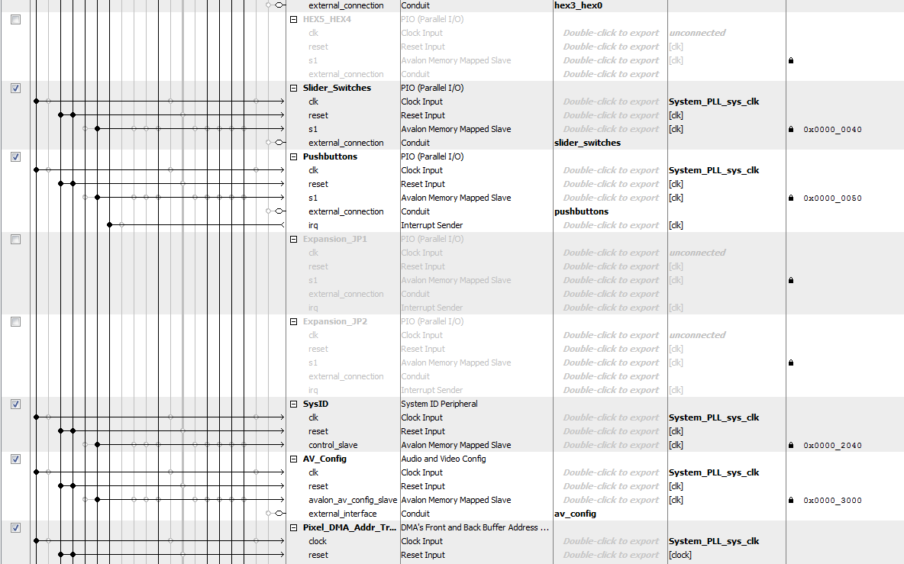
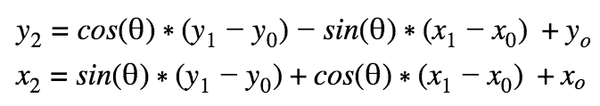

ECE 5760: Playing Card Recognition
Albert Chu (ac2369), Dan Edens (de229), Vaidehi Garg (vg254)

Albert Chu (ac2369), Dan Edens (de229), Vaidehi Garg (vg254)
For our final project for ECE 5760, we drew inspiration from this project, and built a system that recognizes alphanumeric characters on playing cards -- but without the use of OpenCV. The project was intended to be the first step towards implementing an automated blackjack player on a DE1-SoC board. We picked this project because we wanted to combine the unique abilities of the DE1-SoC board, and implement a project that involved computer vision, parallelization, and user interaction.
Our project implementation was distributed over both the FPGA and the HPS, which communicated with each other using parallel I/O ports instantiated in Qsys. We implemented the project in stages, starting with a MATLAB implementation, and then porting the logic over to C, and finally implementing certain parts in Verilog. This helped in testing, debugging, and benchmarking our implementation.
Our project uses the FPGA and the HPS on the DE1-SoC board to implement a character recognition algorithm for playing cards. Apart from the board, our hardware consisted of an NTSC bullet camera facing downwards onto a black background, and a wooden platform onto which the camera was mounted. The cards we used were larger print playing cards, since the camera resolution was low, and we needed larger characters to implement accurate character recognition.
The video stream from the camera was input into the FPGA and then stored in memory in the form of image captures. This memory was accessed by the VGA subsystem for display on a VGA screen, and also by the FPGA and the HPS for analysis of the image captured. The FPGA performs contour traversal on the image to find the outline of the card, and detects its corners. This data is sent over to the HPS along with the image itself. The HPS uses this data to rotate the image, extract the symbol on the top left corner, and perform symbol recognition on it. The user interface was implemented on the console using the HPS.
The FPGA side of the project begins with receiving a live video from an NTSC bullet camera (obtained from Bruce's lab). These cameras are easy to use with the DE1-SoC board and are well documented on the course website and past projects. However, they do not have very high resolution (320x240 pixels), and the lens introduces some fishbowl effect, which places restrictions on the camera's capabilities. In order to get an adequately clear picture for our algorithm, we needed to place the camera fairly close to the card, which limited the number of cards we could reliably scan at the same time. For the project, we restricted ourselves to scanning and recognizing a single card at a time. The Verilog code contains two state machines that run concurrently to implement the system.
The first state machine is the video stream state machine, which reads every pixel of the video feed at a 50 MHz clock. The pixels are written to multiple locations, including VGA memory (through the bus-master), as well as ten dual-clocked M10K blocks defined in Verilog. We store 10 copies of each frame -- one to send to the HPS over a PIO port, and another nine copies that are used to perform contour traversal. This is because our contour traversal algorithm (discussed later in this section) requires reading the eight neighboring pixels for each location. Since we had memory resources to spare, we decided to perform this step in a single clock cycle by reading from 8 separate M10K blocks. The image copies are stored as an array of 76800 (320x240) 8-bit RGB values. Prior to storage, the RGB pixel values were thresholded to ensure that the image was black and white, i.e. any non-white pixels were converted to black.
A second state machine performs contour traversal and corner detection in parallel, also at 50 MHz. It resets when it receives a signal from the video state machine that a new image has been captured. In State 0, it initializes certain registers using in the algorithm, and sets the read address to read the first pixel of the image. Then, it traverses the stored image one pixel at a time, searching for the first white pixel (which indicates that the playing card has been found). To avoid stray white pixels in the image being recognized as the playing card, it checks to make sure that the pixel in consideration is indeed surrounded by at least four other white pixels (which would be true for any white pixel on the playing cards). It does this by concurrently reading the eight neighbors of the pixel in consideration from the M10K blocks.
Once the first pixel of the card has been identified, the state machine considers the neighboring pixels once again and based on their values, decides on one of eight directions to traverse the contour in. It then draws the contour onto a blank M10K block by writing white pixels at contour locations. The data in this contour M10K block is shared with the HPS, and acts as a canvas onto which we can plot our analysis of the live image. It also updates the address for the next pixel to read, and updates the variables that store the coordinates for the four corners of the card. This is done by simply comparing the existing corner coordinates with the coordinates of the current pixel. A more interesting version of corner detection, that uses the second derivative of the contour slope at any given point was implemented on HPS, but was challenging to implement in Verilog.
After the direction to traverse in has been decided and the corners updated, the row and column values are updated on the basis of the selected direction. These determine the coordinates of the next pixel of the card contour. The state machine also checks to ensure that it stops traversing the card contour once it reaches close to the first contour pixel (or alternatively, gets to 360 contour pixels). If the contour is not complete, the state machine returns to state 2, increments the contour counter, and continues to traverse. Otherwise, if it meets the conditions to indicate that contour traversing is complete, the contour pixel counter is reset, the contour M10K is reset, and the corner locations are written to memory by writing the value 2. This differentiates them from black pixels (0) and white pixels (1). Finally, it informs the HPS through a PIO port that corners are available, and clears the memory.
The majority of Qsys setup was provided by Bruce's video project, which contains the VGA subsystem. To extend the functionality of the project to meet our needs, we added a variety of parallel I/O ports as shown in the images below.

The contents of the thresholded image SRAM and the contour detection SRAM, both of which are initialized on the FPGA, are controlled and read by the HPS using PIO ports. The HPS can set a read address, which is copied to both SRAMs, and then has access to the data that is produced by the SRAM read. Before performing image analysis, the HPS iterates through a double for loop in order to read every entry in both the thresholded image and contour SRAMs. If it sees that there is a white pixel in the thresholded image, it copies that to raw image memory on the HPS; if it sees that there is a corner, then it stores that information in order to do image rotation.
Image rotation takes a rectangle which circumscribes the card and then rotates every pixel in that rectangle so that the card has zero degrees of rotation relative to the horizontal. The first step in rotation is to find the circumscribing rectangle. This is done by noting the coordinates of the corners, which are located on the extremes of the card, and finding the coordinates of the topmost, rightmost, leftmost, and bottommost corners. This gives the boundaries of the rectangle on the raw image memory that is to be rotated. Additional analysis is done to calculate the lengths of the line segments between the corners, as the shorter line segment should be oriented parallel to the horizontal. The HPS then identifies the two corners closer to the top of the card which create the shorter line segment, and finds the angle of this line segment relative to the horizontal. The formula for rotating a point (x1, y1) around a point (x0, y0) by Θ to point (x2, y2) is given by:
This formula is implemented in C in order to rotate the card image. However, when the image is rotated, image quality degrades because there are round-off errors which prevent certain pixels in the rotated image memory from being written to. Visually, this manifests itself as black speckles in the rotated image. In order to address this problem, we use a non-linear filter in order to remove the isolated black pixels. The filter operates in two steps: first, there is a coarse filter which sees if a black pixel is surrounded 3 pixels on the top, bottom, left, and right by a white pixel; if it is, the black pixel is made a white pixel. This generally eliminates singular clumps or 2x2 clumps of black pixels. The second step is a finer filter which looks at the immediate top, bottom, left, and right pixels; if all are white, then the pixel is made white.
Character extraction looks at the rotated image and attempts to extract the card number from it. In order to make character recognition as effective as possible, character extraction must crop the symbol as closely as possible. This can be challenging given that each symbol has a slightly different size.
In order to compensate for different symbol sizes, there is an automated algorithm which finds the borders of the symbol each time a new symbol is detected. The algorithm first guesses the approximate center of the symbol relative to the rotated image. This can be complicated if rotation is not perfect--then, there is usually a sliver of black space surrounding the card, so saying that the symbol center coordinates are given by half the card center coordinates no longer works. Instead, we guess that the x-coordinate of the symbol center is two-thirds of the x-coordinate of the card center.
Once the symbol center is guessed, the algorithm searches outwards from the center to find an unbroken row or column of white pixels. Searching for an unbroken row or column can also be complicated by black space on the edges of the rotated card memory. In order to solve this problem, the algorithm scans a row or column starting from the leftmost and topmost edges of the image, and only starts looking once a white pixel is seen. Then, it looks until the x or y-coordinate of the card center. If there are continuous white pixels from the first white pixel that is seen until the x or y-coordinate of the card center, this is a potential crop border.
For example, in order to find the top crop border, the algorithm will scan rows upwards from the guessed center’s y-coordinate. Once a potential crop border is seen, this is set as the top crop border of the symbol.
Character recognition relies on the partitioning of an extracted symbol into a grid, and then assigning a 1 or 0 to each space in the grid depending on the proportion of black pixels in the grid. The grid produced by any particular extracted symbol can then be compared to a list of pre-determined symbol template grids.
This approach is contrasted with one in which every pixel of an extracted symbol is compared with a template. Because there is some variability in the rotation method, a pixel-to-pixel comparison in which the symbol that has been extracted is slightly rotated in comparison to the reference template will perform more poorly than one in which a coarser grid is used.
The threshold of proportion of black pixels before a grid entry was coded as black was fine-tuned to be two-thirds. At this threshold level, small rotation variations in the extracted symbol, or fishbowl effects from the camera, did not overly impact the grid that was created.
We used two methods in order to determine the best fit: one method checked black grid cells on a symbol and determined if the corresponding cells in a reference template were also black, and another checked if the cells on a symbol matched the value in the reference template. These two methods are compared in the results section.
The right side of the VGA display shows processing happening on the HPS side of the system. First, an image from the FPGA is displayed, then the image is rotated, and then the extracted symbol is displayed. The user can then take one of three actions. First, they can type “save,” at which point the HPS will take the grid produced by the extracted symbol and save it as a grid template for a card of the user’s choosing. Second, they can type “scan,” at which point the HPS will compare the grid produced by the extracted symbol and compare it to the reference grid for every card. If a user has not previously saved a reference grid for a card in this session, a default reference grid is used. Finally, they can type “write,” at which point the HPS will take every grid that has been saved during this session and overwrite a header file to save those grids as the default reference grids.
To test our ideas, we first implemented our card detection algorithms in MATLAB. All of the cards were captured as image files through a smartphone and converted to 50x32 black and white pixel images to be used as templates in card identification. Next, an image of a to-be-identified rotated card on a black background was resized to 320x240 pixels and converted from 24-bit RGB into 8-bit gray scale through use of a white detection threshold, where every pixel is set to white or black. This removes the need to identify red symbols.
The image was then traversed along the rows until the first white pixel is encountered, which indicates the card has been reached, and contour following begins. The contour following algorithm performs a clockwise radial sweep on 8 neighboring pixels around the current pixel location starting from the top-left and looks for a transition from black to white as shown in Figure 5 in [3]. Since the card is detected from the top side and given the priority levels of the radial sweep, the contour following travels around the card clockwise. An obstacle with using the immediate neighboring pixels in this radial sweep is that the algorithm gets stuck on the bottom left corner when it starts to travel towards the top left and then back to the right back-and-forth indefinitely.
The algorithm was modified to run a radial sweep on 8 pixels that are 2 rows and/or 2 columns from the current pixel location. This introduced slight jaggedness to the contours, but the radial sweep window was large enough to avoid getting stuck. While following the contour, the top, bottom, left, and right extreme coordinates of the card are recorded. When the card has some rotation from vertical, these coordinates are the locations of the four corners. The distance between the four extremes are then calculated to determine which way the card is rotated from vertical, and then the coordinates which connect the longer edge are used to calculate the angle at which it is rotated. The image is then cropped to contain only the card using the four extremes, and this cropped image is rotated towards vertical by the calculate angle. This rotated image is then traversed while detecting for transitions between white and black within a region. The left, right, top, and bottom extremes where these transitions occur are the symbol’s region. The image is then cropped again to extract the symbol and is resized to match the size of the reference symbols. Every pixel of the extracted symbol is then compared with the corresponding pixel in each reference symbol, and a count is incremented when the pixel color is different. The symbol reference that yields the lowest count is the match. The program finally outputs the symbol that was matched. The matlab program was tweaked in various ways to enhance the results, while keeping the logic simple with a verilog version of this program in mind.
The MATLAB program was then converted to C on the HPS. An M10K on the FPGA was setup to receive an image from an NTSC camera containing the playing card on a black background and transfer the image to HPS. Most of the logic in MATLAB worked well on the HPS except for the image rotation and the angle calculation. The image rotation is discussed in the HPS section. The angle calculation sometimes yields nan when the corner detection from contour following produces poor results (i.e. the program thinks two corners are much closer than they really are). This one error propagates into the other functions and disturbs the program flow. To produce stable results, we simply do not perform any functions after corner detection until the angle value is valid. Detecting the corners accurately is essential to identifying the symbol properly, and any error in corner detection propagates to the rest of the program and yields poor results. The symbol identification is done similarly as in MATLAB except that the reference symbols and extracted symbol are transformed into a lower resolution bitmap. This is discussed in the HPS section.
After the HPS program produced satisfactory results, we split the project into two routes. The first focused on enhancing the C program on HPS to make corner detection more accurate through use of second derivatives. The second was the implementation of contour following on the FPGA. Both of these are discussed in the HPS and FPGA sections.
Throughout the project development, testing mostly involved observing the image and corners at various stages. Using MATLAB before C, and C before verilog accelerated code development and testing given the compilation times are much shorter.
In order to evaluate the success rate of our program, we modified our code to run without user input and evaluate a card twenty consecutive times. We then evaluated how many times of those twenty the program produced an accurate result.
We examined both differences in the success rate between different cards, and the differences in the success rate for the same card, oriented differently relative to the camera. The results are given in the figures below.

The results show the somewhat mixed success rate of our system. For some cards, in some orientations, the system perfectly detects the card. For example, the J is perfectly or near-perfectly recognized in all orientations with a small enough angle. However, when it is rotated too much, its recognition rate drops to almost nothing. This happens due to a combination of rotation and symbol recognition error. If the angle is too high, card rotation can fail to correctly rotate the card, especially if the corner detection is off. As such, the extracted symbol is too rotated for symbol recognition to accurately recognize the symbol.
The accuracy results for the 6 shows different causes for recognition failure. The failure at -.514 radians happens because of symbol extraction failure: that is, the symbol that was extracted was in the wrong area of the card. This can happen when corner recognition fails, and the algorithm does not know where the actual center of the card is. The results for recognizing a 6 also show that results are not necessarily binary between perfect recognition and total failure. Because the 6 resembles some other cards, chiefly the 8, at certain angles there can be a low, non-zero success rate--for example, the 35% success rate at -.3 radians.
The accuracy results for the 3 highlight some problems in a symbol recognition system wherein only black cells are compared to each other. Out of four tested angles, only one orientation received greater than 90% accuracy. This happens largely because the template for an 8 completely overlaps the template for a 3, so if only black cells from the compared symbol are examined, the algorithm can easily mistake the 3 for an 8.
Finally, we analyzed the benefits and drawbacks of the different card recognition strategies: one in which only black cells are compared, and one in which all cells are compared. For the first strategy, a 3 and an 8 at .275 radians relative to the camera were evaluated. Results are given in the table below:
| Result Card | Frequency |
|---|---|
| 3 | 16 |
| 8 | 13 |
| 4 | 1 |
| Result Card | Frequency |
|---|---|
| 8 | 18 |
| 6 | 2 |
The results show that the first strategy works very well for an 8, producing 90% accuracy. However, a 3 is frequently mistaken for an 8 at a rate of 65%, for the reasons explained above. The recognition strategy was then changed to compare all cells, not just black ones. The results are shown below:
| Result Card | Frequency |
|---|---|
| 3 | 15 |
| 2 | 4 |
| J | 1 |
| Result Card | Frequency |
|---|---|
| 8 | 15 |
| 6 | 5 |
These results show that Strategy 2 gives much better accuracy for the 3, because it sees that the left side of the three does not match the 8. However, it decreases slightly the accuracy for the 8. It seems like this could be the case because Strategy 2 rewards cards for having whitespace in the same places as a reference card, and which makes small variations in masks produced by the same symbol harder to account for.
This project was successful as we were able to identify cards with a high success rate, and our program is fast and efficient in terms of hardware parallelization. In terms of future work, we would use a higher resolution camera with little fish bowl effect. This would enable use to increase the distance between the playing table and camera and capture more cards in the scene. We would then modify the program to detect ten or more cards at the same time and keep track of the cards that were played. This could then be used to count cards in a game of blackjack.
This group approves this report for inclusion on the course website.
This group approves the video for inclusion on the course YouTube channel.
All group members contributed to all parts of the project, including Verilog logic, HPS code, debugging, and the final report. Dan performed the initial implementation in MATLAB, and helped implement the HPS and Verilog versions. Albert worked on the implementation in C and the user interface. Vaidehi helped port the implementation over from C to Verilog, and debug the HPS and Verilog versions.
We would like to thank Prof. Bruce Land, and TAs Mark Zhao and Claire Chen for their help throughout the course.